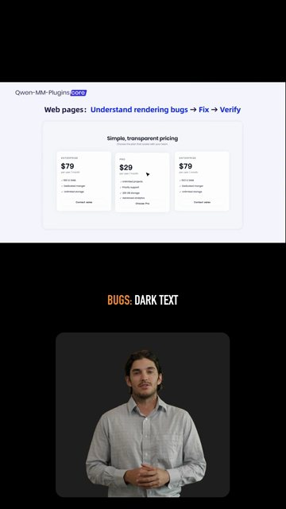

Gotowe za ok. 4 min. Wydano 1,04 USD.

Teraz
Kontrola ogląda cięcie 7 z 12
runda 2 z 3Runda 1
Kontrola: napisy na twarzy w 0:12.
Zmiana: napisy nad oknem prezentera.
Runda 2
Kontrola ogląda poprawioną wersję…
Analiza i scenariusz0,10
Twoja decyzja: treść—
Głos płatne0,16
Prezenter płatne0,67
Montaż i kontrola0,11
Werdykt krytyka
Gotowy film